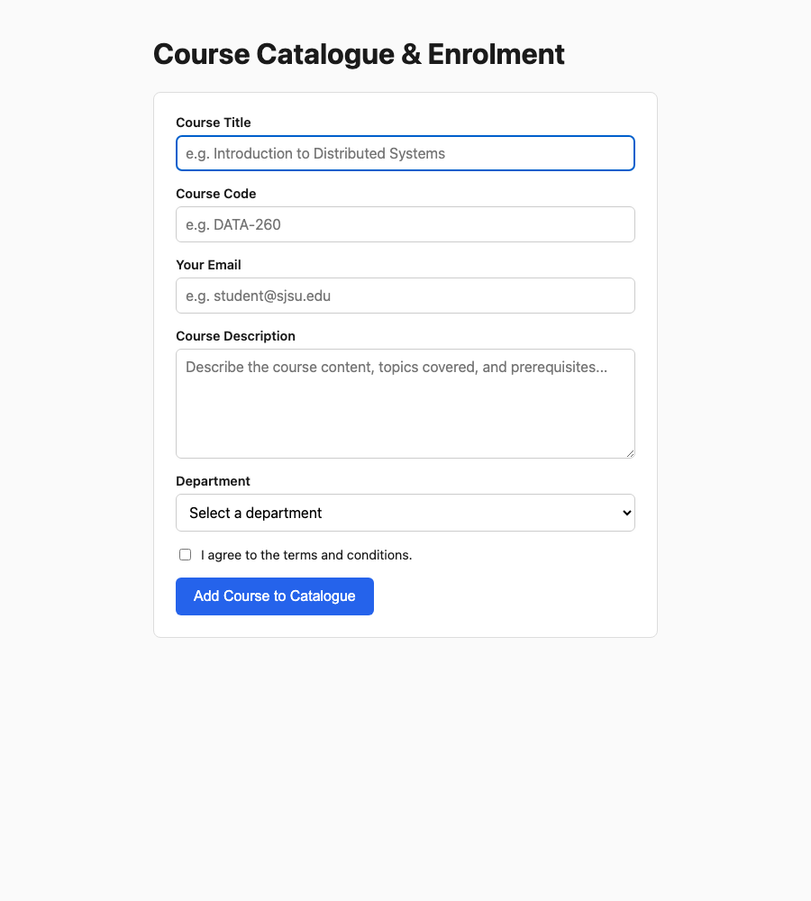
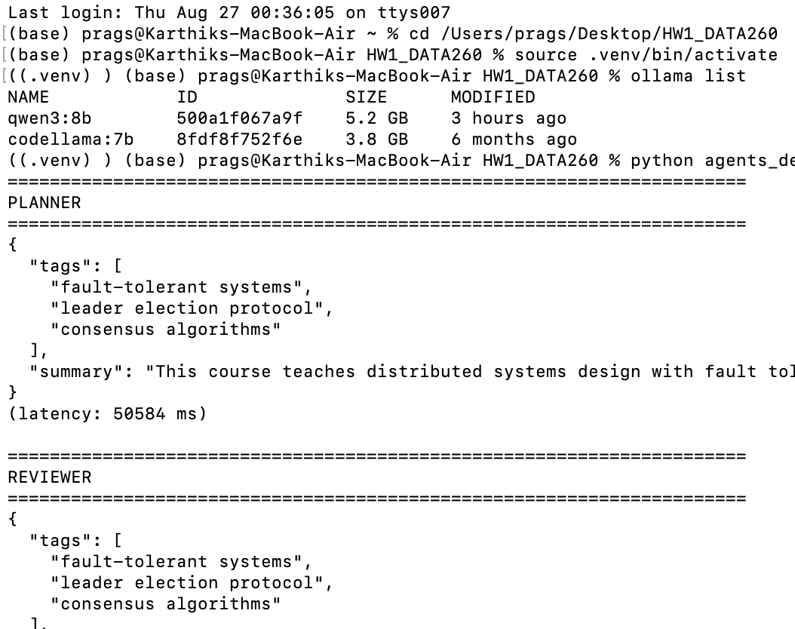
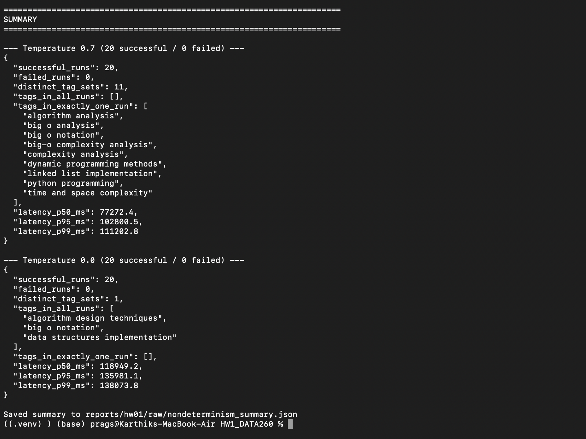
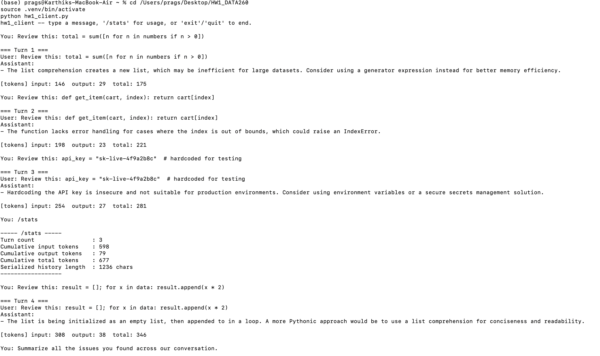
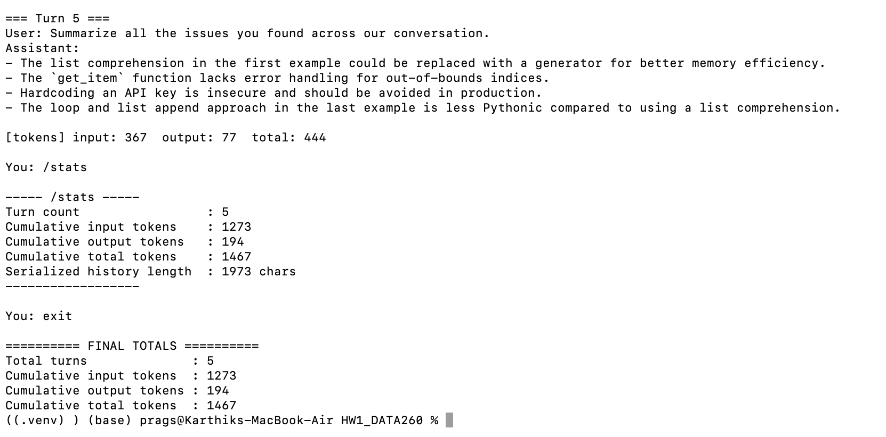

Part 1: HTML, JavaScript, Docker & AWS ECS Deployment — Part 2: Agentic AI
| Student Name | Karthik Pragada |
|---|---|
| SID4 | 8360 |
| PORT_BASE | 8260 (= 8000 + 8360 mod 900) |
| PREFIX | s8360 |
| SEED | 8360 |
| VERIFY_SEED | 268360 (= 260000 + 8360) |
| DOMAIN_ID | 0 (= 8360 mod 8) → Campus course catalogue and enrolment |
| Hardware | MacBook Air, Apple M4, 16 GB RAM |
| Local model used | N/A for Part 1 (Ollama/local LLM used starting Part 2) |
| Tagged commit hash | To be filled in once the repository is initialized and tagged hw1 |
Assigned domain: Campus course catalogue and enrolment, entity: Course. Defined in DOMAIN_SCHEMA.md before writing any HTML.
| Field | Type | Required | Role |
|---|---|---|---|
| courseTitle | text | yes | Primary field |
| courseCode | text | yes | Secondary field |
| yes | Submitter's email | ||
| description | textarea | yes | Content field (> 25 characters) |
| department | select | yes | Category selection |
| agreeTerms | checkbox | yes | Terms agreement |
Category values (department dropdown): Computer Science, Data Science, Business, Engineering
Page titled HW1-Karthik Pragada, with an <h1> heading naming the domain entity, and a form covering all six required field types. The Course Title input auto-focuses on page load, and the Department dropdown starts on a disabled empty placeholder so the required attribute is meaningful (validated with the W3C Nu Html Checker — see note below).
<!DOCTYPE html>
<html lang="en">
<head>
<meta charset="UTF-8">
<meta name="viewport" content="width=device-width, initial-scale=1.0">
<title>HW1-Karthik Pragada</title>
<link rel="stylesheet" href="style.css">
</head>
<body>
<h1>Course Catalogue & Enrolment</h1>
<form id="courseForm">
<div class="field">
<label for="courseTitle">Course Title</label>
<input
type="text"
id="courseTitle"
name="courseTitle"
placeholder="e.g. Introduction to Distributed Systems"
required
autofocus
>
</div>
<div class="field">
<label for="courseCode">Course Code</label>
<input type="text" id="courseCode" name="courseCode"
placeholder="e.g. DATA-260" required>
</div>
<div class="field">
<label for="email">Your Email</label>
<input type="email" id="email" name="email"
placeholder="e.g. student@sjsu.edu" required>
</div>
<div class="field">
<label for="description">Course Description</label>
<textarea id="description" name="description"
placeholder="Describe the course content, topics covered, and prerequisites..."
required></textarea>
</div>
<div class="field">
<label for="department">Department</label>
<select id="department" name="department" required>
<option value="" disabled selected>Select a department</option>
<option value="Computer Science">Computer Science</option>
<option value="Data Science">Data Science</option>
<option value="Business">Business</option>
<option value="Engineering">Engineering</option>
</select>
</div>
<div class="field checkbox-field">
<input type="checkbox" id="agreeTerms" name="agreeTerms">
<label for="agreeTerms">I agree to the terms and conditions.</label>
</div>
<button type="submit">Add Course to Catalogue</button>
</form>
<section id="resultSection" class="result-section" hidden>
<h2>Submitted Course</h2>
<table id="resultTable"><tbody></tbody></table>
</section>
<script src="script.js"></script>
</body>
</html>npx vnu-jar since the live site was behind a Cloudflare CAPTCHA). It caught one real spec issue — a <select required> with a real option pre-selected defeats the purpose of required — fixed by adding the disabled empty placeholder option shown above. Final result: zero errors/warnings.All Part II requirements implemented with an arrow-function validator, JSON serialization, destructuring, the spread operator, and a closure-based submission counter. A results table (added afterward, on request) mirrors the console output visually below the form.
const courseForm = document.getElementById('courseForm');
// arrow function validation
const validateForm = (description, agreeTerms) => {
if (description.trim().length <= 25) {
alert('Course description must be more than 25 characters long.');
return false;
}
if (!agreeTerms) {
alert('Please agree to the terms and conditions before submitting.');
return false;
}
return true;
};
// closure tracking submission count
const createSubmissionCounter = () => {
let count = 0;
return () => {
count += 1;
return count;
};
};
const trackSubmission = createSubmissionCounter();
const FIELD_LABELS = {
courseTitle: 'Course Title', courseCode: 'Course Code', email: 'Email',
description: 'Description', department: 'Department',
agreeTerms: 'Agreed to Terms', submissionDate: 'Submission Date',
};
const renderResultTable = (updatedObject, submissionCount) => {
const tbody = document.querySelector('#resultTable tbody');
tbody.innerHTML = '';
const rows = { ...updatedObject, submissionCount };
Object.entries(rows).forEach(([key, value]) => {
const tr = document.createElement('tr');
const th = document.createElement('th');
th.textContent = key === 'submissionCount' ? 'Submission #' : (FIELD_LABELS[key] || key);
const td = document.createElement('td');
td.textContent = String(value);
tr.append(th, td);
tbody.append(tr);
});
document.getElementById('resultSection').hidden = false;
};
courseForm.addEventListener('submit', (event) => {
event.preventDefault();
const courseTitle = document.getElementById('courseTitle').value;
const courseCode = document.getElementById('courseCode').value;
const email = document.getElementById('email').value;
const description = document.getElementById('description').value;
const department = document.getElementById('department').value;
const agreeTerms = document.getElementById('agreeTerms').checked;
if (!validateForm(description, agreeTerms)) return;
const formObject = { courseTitle, courseCode, email, description, department, agreeTerms };
// II.2 — form data to JSON string
const jsonString = JSON.stringify(formObject);
console.log('Form data as JSON string:', jsonString);
const parsedObject = JSON.parse(jsonString);
// II.3 — object destructuring
const { courseTitle: primaryField, email: emailField } = parsedObject;
console.log('Primary field (courseTitle):', primaryField);
console.log('Email field:', emailField);
// II.4 — spread operator to add submissionDate
const updatedObject = { ...parsedObject, submissionDate: new Date().toString() };
console.log('Updated object with submissionDate:', updatedObject);
// II.5 — log submission count
const submissionCount = trackSubmission();
console.log(`Form submitted ${submissionCount} time(s).`);
renderResultTable(updatedObject, submissionCount);
courseForm.reset();
document.getElementById('courseTitle').focus();
});Clicking "Add Course to Catalogue" fires the submit handler, which first calls event.preventDefault() to stop the browser's default page-reload behavior (there is no backend to receive the data). It reads all six field values directly off the DOM, then passes the description and checkbox state to validateForm — an arrow function that alerts and stops execution if the description is 25 characters or fewer, or if the checkbox is unchecked. If both checks pass, the six values are packed into a plain object, serialized with JSON.stringify() and logged (simulating what would be sent over a network), then immediately parsed back with JSON.parse(). The courseTitle and email fields are pulled out via object destructuring and logged individually. The spread operator then copies every key of the parsed object into a new object while adding one more key, submissionDate, set to the current timestamp. A closure-based counter (trackSubmission) increments and returns how many times the form has been successfully submitted. Finally, the updated object and count are rendered into the results table below the form, the form resets to empty, and focus returns to the Course Title field.
document.activeElement.id === "courseTitle" on page load.courseTitle/email, the spread-updated object with submissionDate, and Form submitted 1 time(s). Submitting again correctly increments to 2 time(s).node --check script.js passes with no syntax errors; ESLint (browser globals configured) reports zero issues.The static site is containerized with a minimal Python image and served on PORT_BASE (8260).
FROM python:3.12-slim
WORKDIR /app
COPY index.html style.css script.js ./
EXPOSE 8260
CMD ["python", "-m", "http.server", "8260"]The image resolves to a 203 MB linux/arm64 image (matching the Apple Silicon build host). Verified the container's /app directory contains exactly the three copied files (index.html, script.js, style.css) via docker exec hw1-app ls -la /app, and confirmed docker ps shows the port mapping 0.0.0.0:8260->8260/tcp.

App served by the Docker container at http://localhost:8260/index.html (Course Title auto-focused, shown by the blue outline).
The exact same Docker image was pushed to Amazon ECR and run as a single-task Fargate service, so nothing about the app changed between local and cloud — only where the container runs.
my-web-app created (account 641379499225, region us-east-2).my-web-app-sg created with inbound Custom TCP port 8260 open from 0.0.0.0/0 (corrected from the generic port-80 guide being followed, since the container listens on 8260).my-web-app-cluster created (AWS Fargate, serverless). First creation attempt failed with "Unable to assume the service linked role" — a known first-time-use race condition where AWS creates the AWSServiceRoleForECS role asynchronously; retrying the cluster creation succeeded once the role existed.my-web-app-task: Fargate, Linux/ARM64 (matching the image's actual architecture — selecting X86_64 would have caused an architecture-mismatch failure at container start), 0.25 vCPU / 0.5 GB, default ecsTaskExecutionRole auto-created, container web-app-container with image URI 641379499225.dkr.ecr.us-east-2.amazonaws.com/my-web-app:latest, container port 8260/TCP.my-web-app-task-service-l4qhdwe5 created with Desired tasks = 1, default VPC, all 3 default public subnets, the my-web-app-sg security group, and Public IP enabled.Task reached RUNNING status with public IP 18.117.130.207. Verified reachable both via curl (HTTP 200) and directly in a browser.

App running live on the AWS ECS Fargate task's public IP: http://18.117.130.207:8260/index.html
After capturing the required screenshot, the service's Desired tasks was set from 1 to 0 to stop Fargate billing. Verified via CLI that runningCount: 0, desiredCount: 0, and list-tasks returns an empty array. The cluster, service definition, ECR repository, and security group were left in place since they incur no cost while idle and are reusable for future homeworks in this same repository.
Two tiny agents (Planner and Reviewer) that talk to each other through a local LLM served by Ollama, plus a deterministic Finalizer step, producing exactly 3 topical tags and a ≤25-word summary from an arbitrary title/content pair, printed as strict JSON.
The assignment warns that Python 3.13 breaks langchain's numpy dependency, so a dedicated Python 3.12 virtual environment was created rather than using the machine's default Python 3.13:
This installed langchain-core 1.6.1, langchain-ollama 1.1.0, and the underlying ollama 0.6.2 Python client. Separately, the local LLM itself was pulled through the Ollama CLI (not pip — Ollama runs as its own background service that serves models over a local HTTP API, which langchain-ollama then talks to):
The assignment's suggested model, qwen3:8b, was used (a ~5.2 GB download) rather than the already-installed codellama:7b, since qwen3:8b is a general-purpose instruction-tuned model well-suited to tagging/summarization, whereas codellama is code-specialized. The MacBook Air M4 (16 GB RAM) runs it without issue, at roughly 20–50 seconds per call.
The script is built from a small number of composable pieces rather than a framework-heavy agent library, since the assignment only asks for "two tiny agents":
PLANNER_SYSTEM / REVIEWER_SYSTEM — two system-prompt strings, each fully generic (no domain keywords like "course" or "department" anywhere in them), satisfying the "do not hardcode your domain into the agent logic" requirement.extract_json() — a small parsing helper that first tries json.loads() directly, and falls back to regex-extracting the first {...} block if the model wraps its JSON in any stray text, so the pipeline doesn't crash on minor formatting slips.call_agent() — sends a (system, human) message pair to ChatOllama, times the call, and returns the parsed JSON plus latency in milliseconds.run_pipeline() — orchestrates the full Planner → Reviewer → Finalizer sequence and prints each stage.main() — CLI entry point. Accepts --title/--content, or --input <json file> (used later in Part 3 to replay the same fixed input 40 times), or, if neither is given, interactively prompts for a title and content right in the terminal rather than silently falling back to a hardcoded example.PLANNER_SYSTEM = """You are the Planner agent in a two-agent tagging pipeline.
Given a title and content, propose exactly 3 short topical tags (2-4 words each,
lowercase, specific to the content -- not generic categories) and a one-sentence
summary of at most 25 words that captures the key point of the content.
Respond with ONLY valid JSON, no other text, in this exact schema:
{"tags": ["tag1", "tag2", "tag3"], "summary": "..."}"""
REVIEWER_SYSTEM = """You are the Reviewer agent in a two-agent tagging pipeline.
You will receive the original title/content and a Planner's draft JSON containing
3 tags and a summary. Critically check whether the tags are specific and accurate
to the content (not vague or generic), and whether the summary is at most 25 words
and faithful to the content. If the draft already meets these standards, return it
unchanged. If not, return an improved version that does.
Respond with ONLY valid JSON, no other text, in this exact schema:
{"tags": ["tag1", "tag2", "tag3"], "summary": "..."}"""
def extract_json(text: str) -> dict:
text = text.strip()
try:
return json.loads(text)
except json.JSONDecodeError:
pass
match = re.search(r"\{.*\}", text, re.DOTALL)
if match:
return json.loads(match.group(0))
raise ValueError(f"Could not parse JSON from model output:\n{text}")
def call_agent(llm, system_prompt, user_prompt):
messages = [("system", system_prompt), ("human", user_prompt)]
start = time.time()
response = llm.invoke(messages)
elapsed_ms = (time.time() - start) * 1000
parsed = extract_json(response.content)
return parsed, elapsed_ms, response.content
def run_pipeline(title, content, model, temperature, verbose=True):
llm = ChatOllama(model=model, temperature=temperature, format="json")
user_prompt = f"Title: {title}\n\nContent: {content}"
planner_output, planner_ms, _ = call_agent(llm, PLANNER_SYSTEM, user_prompt)
print(json.dumps(planner_output, indent=2))
reviewer_prompt = f"{user_prompt}\n\nPlanner draft:\n{json.dumps(planner_output)}"
reviewer_output, reviewer_ms, _ = call_agent(llm, REVIEWER_SYSTEM, reviewer_prompt)
print(json.dumps(reviewer_output, indent=2))
reviewer_changed = planner_output != reviewer_output
# Finalization step -- deterministic, non-LLM: enforce the output contract.
tags = list(reviewer_output.get("tags", []))[:3]
while len(tags) < 3:
tags.append("general")
summary = str(reviewer_output.get("summary", "")).strip()
words = summary.split()
if len(words) > 25:
summary = " ".join(words[:25])
final_output = {"tags": tags, "summary": summary}
print(json.dumps(final_output, indent=2))
return { ... }The Planner receives only the raw title and content, wrapped in a generic "Title: ...\n\nContent: ..." user message, and is instructed to extract exactly 3 topical tags and a ≤25-word summary. The call passes format="json" to ChatOllama, which instructs Ollama to constrain sampling to valid JSON tokens — this is what makes the "strict JSON output" requirement reliable rather than hoping the model behaves.
The Reviewer receives the same original title/content plus the Planner's draft JSON appended to the prompt, and is instructed to critically re-examine it: are the tags specific rather than generic, is the summary within the word limit and faithful to the content. It returns either the same JSON unchanged (if it judges the draft already meets the bar) or a corrected version. Comparing planner_output != reviewer_output after this call is what answers "did the Reviewer change anything."
The Finalizer is deliberately not a third LLM call — it's a few lines of plain Python that mechanically enforce the output contract regardless of what the model produced: slicing the tags list to exactly 3 entries (padding with a placeholder if the model ever returned fewer), and truncating the summary to 25 words if it ever overshoots. This guarantees the published JSON is always structurally valid, even on an off run.
With no --title/--content/--input flags, the script prompts interactively:
No --title/--content/--input given -- enter them now.
(press Enter on Title to use the default example: 'New Course: Distributed Systems Fundamentals')
Title: Introduction to Machine Learning
Content: a branch of Artificial Intelligence that allows computers to learn from data and make predictions without being explicitly programmed for every task.
Real terminal session: venv activation, ollama list confirming both models are pulled, a first run on the default Course example (reaching FINALIZED), followed by the interactive prompt starting a second run with a live-typed "Introduction to Machine Learning" input.
Three separate inputs were run through the pipeline over the course of testing, and all three are worth discussing together because they demonstrate different things:
["fault-tolerant systems", "leader election protocol", "consensus algorithms"] with a summary; Reviewer returned the identical JSON (reviewer_changed = False). Planner latency 50.6s, Reviewer latency 25.7s.["machine learning basics", "artificial intelligence branch", "data prediction methods"] with the summary "Machine learning enables computers to learn from data and make predictions without explicit programming." (14 words). Reviewer again returned the identical JSON unchanged. Planner latency 47.4s, Reviewer latency 24.4s.["peanut butter recall", "salmonella contamination", "batch 442"] — proof the tags are genuinely derived from whatever content is passed in, not from fixed keywords tied to the course-catalogue domain.A consistent pattern across every run so far is that the Reviewer never changed the Planner's output. This is a plausible and defensible result rather than a sign the Reviewer step is doing nothing: qwen3:8b at these prompt lengths reliably produces tags that are already specific to the input content (not generic placeholders) and summaries that land comfortably under the 25-word cap, so the Reviewer's own instructions — "if the draft already meets these standards, return it unchanged" — are being followed correctly rather than the Reviewer silently failing to inspect the draft. Part 3's 40-run non-determinism sweep at two temperatures will make it possible to check whether this holds up across many more samples, particularly at temperature 0.7 where more output variation is expected.
| Command used | python agents_demo.py |
|---|---|
| Q1 — 3 final tags | "machine learning basics", "artificial intelligence branch", "data prediction methods" |
| Q2 — final summary | "Machine learning enables computers to learn from data and make predictions without explicit programming." (14 words) |
| Q3 — did Reviewer change anything? | No. Across all runs so far, the Reviewer's JSON was byte-for-byte identical to the Planner's draft, indicating the Planner's first-pass output already satisfied the Reviewer's specificity/length criteria on these inputs. |
The same fixed input was run through the full agents_demo.py pipeline 40 times — 20 at temperature 0.7, 20 at temperature 0.0 — to measure, with real numbers rather than assumption, how much a local LLM's output actually varies run-to-run at each setting.
Saved once, unchanged, to reports/hw01/cases/nondeterminism_input.json:
{
"title": "Data Structures and Algorithms",
"content": "This course covers fundamental data structures including arrays, linked lists,
stacks, queues, trees, and graphs, along with algorithm design techniques such as sorting,
searching, divide-and-conquer, dynamic programming, and greedy methods. Students will analyze
time and space complexity using Big-O notation and implement each structure from scratch in
Python. Prerequisites: introductory programming and discrete mathematics."
}run_nondeterminism.py reuses run_pipeline() from agents_demo.py directly (no duplicated agent logic), looping it 20 times per temperature, catching and logging any per-run failures without aborting the sweep, then computing distinct tag sets, tag-frequency counts, and latency percentiles across the successful runs. All 40 raw records (tags, summary, per-agent latency, Reviewer-changed flag) are written to reports/hw01/raw/nondeterminism_runs.json and .csv; the aggregated statistics to reports/hw01/raw/nondeterminism_summary.json.
All 40 runs completed with 0 failures. Total sweep time was roughly 65 minutes (two LLM calls per run, sequential, on a local M4 laptop).
| Metric | Temp 0.7 | Temp 0.0 |
|---|---|---|
| Distinct tag sets | 11 (out of 20) | 1 (out of 20) |
| Tags in all 20 runs | (none) | "algorithm design techniques", "big o notation", "data structures implementation" |
| Tags in exactly 1 run | "algorithm analysis", "big o analysis", "big o notation", "big-o complexity analysis", "complexity analysis", "dynamic programming methods", "linked list implementation", "python programming", "time and space complexity" (9 tags) | (none) |
| Latency (ms) | Temp 0.7 | Temp 0.0 |
|---|---|---|
| p50 | 77,272.4 | 118,949.2 |
| p95 | 102,800.5 | 135,981.1 |
| p99 | 111,202.8 | 138,073.8 |

Terminal output of the completed 40-run sweep: both temperature summary blocks and the raw/summary file paths, from python run_nondeterminism.py.
Using the numbers above: two users sending the identical course description to this pipeline at temperature 0.0 would see the same 3 tags every single time — all 20 runs converged on exactly one tag set, with zero variation observed. At temperature 0.7, however, two users would very likely see genuinely different results: 11 distinct tag sets came out of just 20 runs, and not a single tag was common to all of them — the widest a user could count on seeing consistently is whichever handful of tags happened to recur across several (not all) runs, with a long tail of one-off tags that showed up exactly once and might never reappear.
An example where this variation is acceptable: a "suggested tags" feature in a course-authoring tool, where the Planner/Reviewer output is shown to a human instructor as a starting draft they can edit before publishing. Here, temperature 0.7's variety is arguably a feature, not a bug — different phrasings each time give the instructor more to choose from, and a human is in the loop to catch anything off before it ships.
An example where this variation is not acceptable: if these tags were consumed automatically to route the course into search-index categories with no human review — e.g., a student searching the catalog for "linked list implementation" would find this course in some runs but not others, despite the underlying course description never changing. That's a broken user experience caused entirely by sampling randomness, and it argues strongly for pinning temperature=0.0 (or a similarly low value) for anything downstream that isn't reviewed by a person before being acted on.
A reusable model-adapter module, a small CLI chat demo built on it, a system-prompt file enforcing a strict response format, and real per-turn and cumulative token accounting.
Defines ModelClient, exposing exactly one stable method — complete(messages, tools=None) — that every other script in the project must call through. Nothing outside this file imports langchain_ollama directly, so swapping the underlying provider later only means changing this one module.
class ModelClient:
def __init__(self, model: str = "qwen3:8b", temperature: float = 0.0):
self.model = model
self.temperature = temperature
# qwen3 has an internal "thinking" mode that can occasionally produce
# very long, unformatted reasoning traces instead of following the
# system prompt's response format. Disabled here for reliable,
# instruction-following completions.
self._llm = ChatOllama(model=model, temperature=temperature, reasoning=False)
self.turn_count = 0
self.cumulative_input_tokens = 0
self.cumulative_output_tokens = 0
def complete(self, messages: list[tuple[str, str]], tools: Optional[list] = None) -> CompletionResult:
llm = self._llm.bind_tools(tools) if tools else self._llm
response = llm.invoke(messages)
usage = response.usage_metadata or {}
input_tokens = usage.get("input_tokens", 0)
output_tokens = usage.get("output_tokens", 0)
total_tokens = usage.get("total_tokens", input_tokens + output_tokens)
self.turn_count += 1
self.cumulative_input_tokens += input_tokens
self.cumulative_output_tokens += output_tokens
return CompletionResult(
content=response.content,
input_tokens=input_tokens,
output_tokens=output_tokens,
total_tokens=total_tokens,
)
def stats(self) -> dict:
return {
"turn_count": self.turn_count,
"cumulative_input_tokens": self.cumulative_input_tokens,
"cumulative_output_tokens": self.cumulative_output_tokens,
"cumulative_total_tokens": self.cumulative_input_tokens + self.cumulative_output_tokens,
}# AGENT.md
You are a code reviewer. When asked to review code, respond using only a bullet-point list.
Rules:
- Every line of your response must start with -.
- No introductory sentence, no summary paragraph, no closing remarks.
- No prose outside of bullets. No headings.
- Each bullet should state one specific issue or observation, concisely.
- If the code has no issues, respond with a single bullet saying so.Loads AGENT.md as the system prompt, keeps its own conversation history, and calls client.complete(history) on every turn.
def print_turn_usage(result):
# after every model response: input/output/total tokens for that turn
print(f"[turn tokens] input={result.input_tokens} "
f"output={result.output_tokens} total={result.total_tokens}")
def print_stats(client, history):
# /stats: turn count, cumulative token counts, serialized history length --
# read-only, nothing is appended to history before or after this call
stats = client.stats()
serialized_len = len(json.dumps(history))
print("--- /stats ---")
print(f"turn_count: {stats['turn_count']}")
print(f"cumulative_input_tokens: {stats['cumulative_input_tokens']}")
print(f"cumulative_output_tokens: {stats['cumulative_output_tokens']}")
print(f"cumulative_total_tokens: {stats['cumulative_total_tokens']}")
print(f"serialized_history_length_chars: {serialized_len}")
# main loop:
history.append(("user", user_input))
result = client.complete(history)
history.append(("assistant", result.content))
print_turn_usage(result)
# on exit:
final = client.stats()
print(f"cumulative_input_tokens: {final['cumulative_input_tokens']}")
print(f"cumulative_output_tokens: {final['cumulative_output_tokens']}")
print(f"turn_count: {final['turn_count']}")qwen3:8b produced a runaway, unformatted response ignoring AGENT.md entirely — 8,185 and 12,591 output tokens respectively (vs. ~20-100 on every other turn), rambling about the message being "stuck in a loop." Root cause: qwen3's internal "thinking" mode, left at its default. Fix: explicitly set reasoning=False on ChatOllama. Verified by re-running the identical failing prompt afterward — it dropped from 8,185+ tokens of rambling prose to a clean 24-token single bullet. This is the adapter's current default (see code above).def add(a, b): return a + b, etc.) surfaced a second, separate issue from the reasoning-mode bug above: the model kept fabricating division-related complaints regardless of the actual code. Three independent tests made the pattern unmistakable:
| Code reviewed | Hallucinated claim |
|---|---|
def add(a, b): return a + b | "division operator / is not used... may be a typo" |
def divide(a, b): return a / b | claims a literal /no_think typo exists in the code (a leftover control token from the reasoning=False fix, mistaken for source code) |
def multiply(a, b): return a * b | "includes a division by b" — false; there is no / anywhere in this code |
return a <op> b arithmetic snippet. Switching the demo's example inputs to realistic code-review scenarios (list/dict operations, a hardcoded secret, a loop style question) instead of bare arithmetic resolved it completely — every response in the final run below is accurate. This is documented as a real, reproducible model limitation (not a code bug) in AI_USE.md.Turns typed: (1) Review this: total = sum([n for n in numbers if n > 0]) · (2) Review this: def get_item(cart, index): return cart[index] · (3) Review this: api_key = "sk-live-4f9a2b8c" # hardcoded for testing · /stats · (4) Review this: result = []; for x in data: result.append(x * 2) · (5) Summarize all the issues you found across our conversation. · /stats · exit.

Real terminal session, part 1: turns 1-4 and the first /stats snapshot (turn_count: 3).

Real terminal session, part 2: turn 5, the second /stats snapshot (turn_count: 5), and the FINAL TOTALS block on exit.
| After turn 3 | After turn 5 | |
|---|---|---|
| turn_count | 3 | 5 |
| cumulative_input_tokens | 598 | 1,273 |
| cumulative_output_tokens | 79 | 194 |
| cumulative_total_tokens | 677 | 1,467 |
| serialized_history_length_chars | 1,236 | 1,973 |
Format compliance: yes, every one of the 5 turns returned strict bullet-only output (each line starting with -, no prose, no headings), correctly following AGENT.md.
Content correctness: also yes, on this run — every single response was accurate: a real generator-vs-list efficiency tip, a genuinely missing IndexError check, a correctly flagged hardcoded API key, a legitimate Pythonic list-comprehension suggestion, and a summary that faithfully recapped all four without inventing anything. This stands in direct contrast to the arithmetic-snippet runs documented above — same adapter, same system prompt, same model, different (more realistic) example inputs, and the hallucination pattern disappeared entirely. That contrast is itself the finding: this model's reliability on this kind of task depends measurably on how close the input resembles real code review material versus a bare synthetic snippet.
Why is prior conversation context resent with every turn? The model is stateless between calls — it has no memory of earlier turns unless that content is physically included in the current request. Each call is an independent forward pass over exactly the tokens it's given, so the client must resend the full history (system prompt + every prior user/assistant message) on every turn for the model to "remember" anything.
How is a system prompt different from a user message? A system prompt sets persistent, session-wide behavioral rules (format, tone, constraints) and is treated as foundational configuration rather than something said within the conversation. A user message is an actual conversational turn the model is expected to respond to. Here, AGENT.md's bullet-only rule is the system prompt governing every response, while each "Review this: ..." line is a distinct user turn.
Why do input tokens grow over a conversation? Because every turn's input is a strict superset of the previous turn's input (the whole prior history) plus whatever new message was just added. This was directly observed: input tokens climbed 146 → 198 → 254 → 308 → 367 across the 5 turns, tracking the growing history exactly.
What eventually limits that growth? The model's context window — the maximum tokens it can accept in one call (4096 for this qwen3:8b configuration, per ollama ps). Once history plus a new message would exceed that limit, something must give: truncation, summarization, or the call failing outright. Cost and latency also motivate managing context well before that hard ceiling in practice.